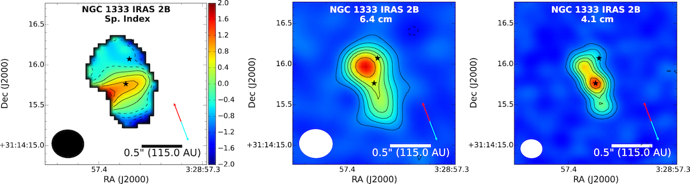

My research
I study the earilest stages of star formation. Two main areas of my expertise are protostellar outflows and embedded disks.Cosmic rays produced in the protostellar jets
Protostellar jets are one of the first signs of an ongoing star formation. I was a part of the VLA Nascent Disks and Multiplicity Survey (VANDAM, PI: Dr. John Tobin) which targeted all known protostars in the Perseus molecular cloud. I studied the emission from the jets of young stars in this cloud. We discovered that the synchrotron emission towards those protostars may be more common than expected. This result shows that the chemistry during the planet formation can be altered by the protostellar jets. See paper: Tychoniec et al. 2018a 
Complete survey of the free-free emission in Perseus
Using data from the VANDAM survey, which was the first complete survey of protostars in a single cloud, we obtain information about the emission from protostellar jets of more than 100 protostars. With this informations we were able to obtain correlations with different properties of protostars. We updated the correlation between free-free emission luminosity and protostellar luminosity (Fig. 2a) and we studied the correlations between the free-free emission and far-IR cooling lines from Herschel (Fig. 2b). See paper: Tychoniec et al. 2018b
Fig. 2. With VANDAM survey data we improved our understanding of the free-free emission in low-mass protostars